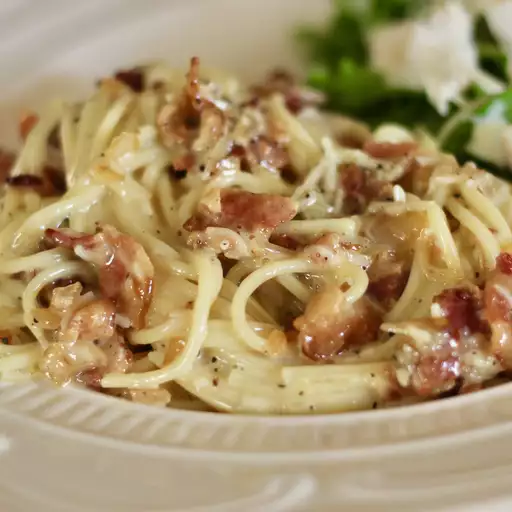

Spaghetti Carbonara

Description
Truly authentic Italian carbonara with bacon coal miners' recipe.
Ingredients
- 1 (16 ounce) package spaghetti
- 12 slices thick-cut, applewood-smoked bacon
- 2 tablespoons olive oil, divided
- 1 onion, finely chopped
- 2 large cloves garlic, minced
- ¼ cup dry vermouth
- 1 cup shredded Parmesan cheese
- ½ cup whipping cream (Optional)
- 1 tablespoon ground black pepper
Steps
-
Bring a large pot of lightly salted water to a boil. Cook spaghetti in
the boiling water, stirring occasionally, until tender yet firm to the
bite, about 12 minutes.
-
Meanwhile, place bacon in a large skillet and cook over medium-high
heat, turning occasionally, until evenly browned, about 10 minutes.
Drain bacon slices on paper towels. Reserve 2 tablespoons bacon fat in
the skillet and discard the rest. Chop bacon when cool enough to handle.
-
Add 1 tablespoon olive oil and onion to reserved bacon fat in the
skillet. Cook over medium-high heat until the onion has softened and
turned translucent, about 5 minutes. Add garlic and cook until fragrant,
about 1 minute. Pour vermouth into the pan and bring to a boil while
scraping the browned bits of food off the bottom of the pan with a
wooden spoon, about 1 minute. Mix in chopped bacon.
-
Drain spaghetti, transfer to a large serving bowl, and mix in remaining
1 tablespoon oil. Add bacon-onion mixture, Parmesan cheese, cream, eggs,
and pepper to the hot pasta; stir until spaghetti is well coated and
sauce is creamy.